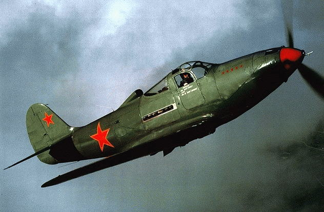
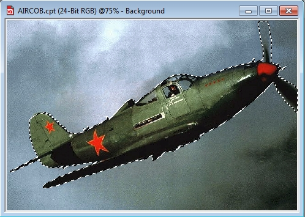
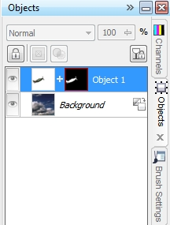
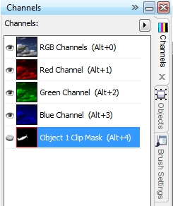
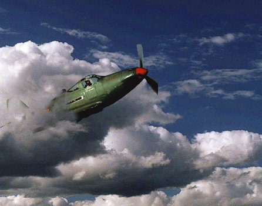
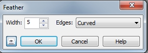
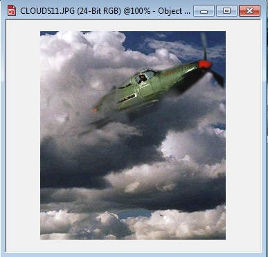

Использование масок обрезки для создания композитных изображений
Маски обрезки в Photo-Paint используются для различных целей при обработке изображений. В этом уроке мы рассмотрим одну из «областей применения» масок обрезки. Наша цель создать композитное изображение, в котором часть одного изображения «сливается» с другим.
Для примера использования данного метода, я решил создать композитное изображение, в котором самолет вылетает из облаков.
Приступим…
На рис. 1 и рис. 2 показаны исходные изображения.

1. Сначала нам нужно выделить самолет. Для этого можете использовать по своему усмотрению один из инструментов выделения. Я использовал в начале выделение инструментом Magic Wand Mask (Маска волшебной палочкой), а затем уже корректировал маску инструментом Brush Mask (Маска кисти). В итоге получилась маска, как на рис. 3

2. Скопируйте выделенный самолет в Буфер обмена.
3. Откройте изображение с облаками (рис. 1) и вставьте из Буфера обмена самолет. Он вставится в изображение, как объект, что будет видно в докере Objects (Объекты). Т. к. самолет больше, чем изображение облаков, то просто уменьшите его с помощью инструмента Object Pick (Указатель объектов) до требуемых размеров и перетащите, чтобы разместить его над облаками. Где вы его разместите, зависит от ваших вкусов и предпочтений. Я его разместил, как показано на рис. 4.
4. При выделенном объекте-самолете, нажмите комбинацию клавиш Ctrl + M, чтобы создать из объекта маску.
5. Выполните команду Object > Clip Mask > Create > From Mask (Объект > Маска обрезки > Создать > Из маски). Пунктирная рамка выделения исчезнет, а в докере Objects (Объекты) появится объект с его маской обрезки (рис. 5).

6. Для выполнения дальнейших действий, убедитесь что в докере Objects (Объекты) выделен самолет с маской обрезки. Перейдите в докер Channels (Каналы) или вызовите его, нажав Ctrl + F9. В докере Channels (Каналы) вы также увидите созданную Маску обрезки (рис. 6).

7. В докере Channels (Каналы) выделите канал соответствующий объекту с его маской обрезки (если он по каким-то причинам не выделен), как на рис. 6. Прежде, чем мы двинемся дальше, я напомню, что при работе с масками, черный цвет скрывает содержимое маски, а белый – показывает. Серый цвет дает полупрозрачное изображение. Воспользуемся этим свойством маски. Переключитесь на инструмент Paint (Кисть), нажав горячую клавишу Р. Выберите мягкую кисть, установив на Панели свойств значение параметра Feather (Размытие) = 100. Размер кисти выберите по своему усмотрению, я выбрал размер – 30 px. Выберите на Палитре, в качестве цвета краски черный цвет и закрасьте хвостовую часть самолета. По мере приближения к средней части самолета, выбирайте в качестве цвета краски 90 % черного, 80% черного и т. д., постепенно переходя на серый цвет. На каком оттенке серого остановиться, выбирайте по мере работы. Если получиться так, что вы закрасив черным цветом, чуточку переборщили с «прозрачностью», вы можете выбрать более светлый оттенок серого и закрасить поверх, что приведет к «восстановлению скрытой» части самолета. Кроме этого, вы в ходе выполнения («закрашивания» самолета), можете скрывать или отображать его части, делая не мазки кистью, а выполняя одиночные щелчки, что позволит создать впечатление, что сквозь облака просматривается частичка самолета. Так будет реалистичней. Результат показан на рис. 7.

8. Однако изображение выглядит немного несуразно, потому что в исходном изображении самолета, на нем пропеллер был изображен не полностью, что создает впечатление, что он просто обрезан. Поэтому нам также придется обрезать полученное изображение по пропеллер. Для этого активизируйте инструмент Crop (Обрезка), нажав клавишу D. Обрежьте изображение.
9. Теперь добавим последний штрих. Переключитесь на инструмент Object Pick (Указатель объектов). Вокруг самолета появятся выделяющие маркеры. Выполните команду Object > Feather (Объект > Размыть края), чтобы смягчить края самолета и сделать изображение более реалистичным. В диалоговом окне Feather (Размытие), установите параметры, как на рис. 8.

10. Конечный результат показан на рис. 9.

В данном уроке показан довольно простой способ создания композитного изображения. Используя данную методику можно создавать фантастические изображения, например, корабль-призрак, выплывающий из тумана. Однако подбор исходных изображений, как всегда имеет определяющее значение, о чем я всегда повторяю, рассказывая о создании композитных изображений.
Хороший урок!
В данном случае речь идёт о коллаже, а слово "композитный" тут не совсем уместно)))
*Композитный материал, также называемый композиционный материал или композит - это искусственно созданный неоднородный сплошной материал, состоящий из двух или более компонентов, различных по физическим и химическим свойствам, которые остаются раздельными на макроскопическом уровне в финишной структуре.
Согласен с Chally. Не надо неологизмов, когда для обозначения известных предметов или явлений уже существуют исторически устоявшиеся термины.
Спасибо за урок!